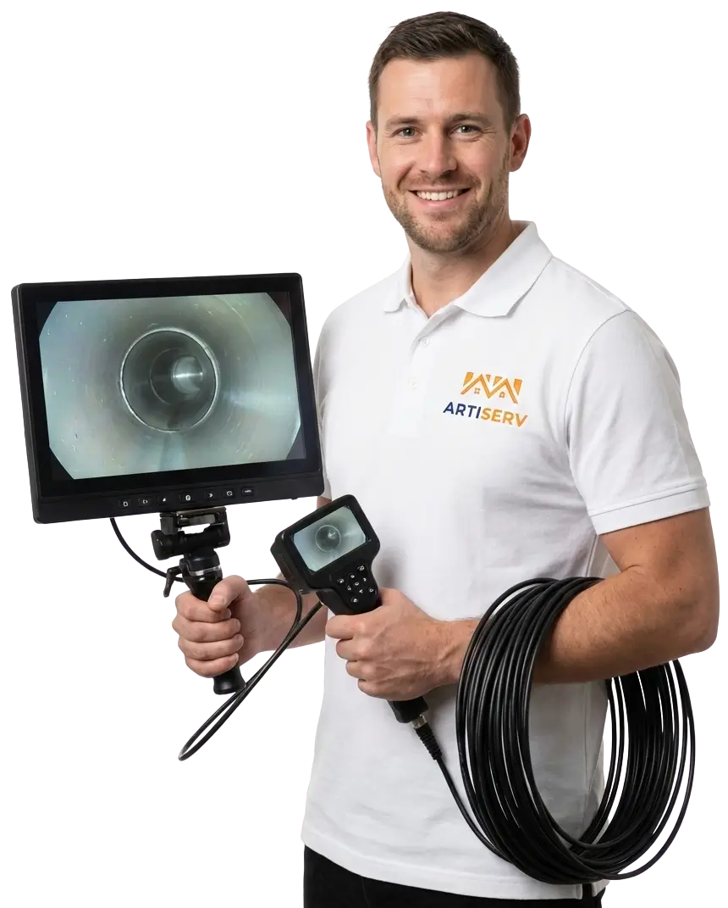

Expert en inspection vidéo par caméra endoscopique HD à Vitry-sur-Seine et dans le Val-de-Marne. Diagnostic précis de vos canalisations, localisation des bouchons, fissures et racines. Rapport vidéo détaillé remis après intervention. Équipement professionnel haute définition.

ARTISERV Débouchage intervient à Vitry-sur-Seine et dans le Val-de-Marne pour l'inspection vidéo professionnelle de vos canalisations. Notre caméra endoscopique haute définition permet un diagnostic précis de l'état de vos réseaux d'évacuation, localise les problèmes et identifie leur nature exacte.
L'inspection vidéo des canalisations est la méthode la plus efficace pour diagnostiquer avec précision les problèmes d'évacuation. Notre équipement professionnel permet d'explorer jusqu'à 100 mètres de canalisations, d'identifier les bouchons, fissures, racines, affaissements ou corrosions, et de localiser exactement leur position. Un rapport vidéo complet vous est remis après chaque intervention.
Zone d'intervention : Vitry-sur-Seine, les communes environnantes et toutes les communes du Val-de-Marne. Intervention d'urgence en moins de 30 minutes avec équipement vidéo professionnel.
Diagnostic intégral de votre réseau d'évacuation par caméra HD. Exploration complète, identification de tous les problèmes, localisation précise. Rapport vidéo détaillé avec recommandations.
Inspection ciblée pour localiser précisément un bouchon. Identification de sa nature : graisses, racines, tartre, corps étranger. Profondeur exacte, distance depuis le regard d'accès.
Inspection des canalisations enterrées, évacuations EP/EU, fosses septiques. Détection fissures, racines, affaissements. Caméra longue portée jusqu'à 100m.
Vérification complète avant achat maison/immeuble. État des canalisations, raccordement tout-à-l'égout, conformité. Rapport détaillé pour négociation prix.
Vérification après débouchage, curage ou réparations. Contrôle qualité des interventions. Confirmation de la résolution du problème. Rapport vidéo avant/après.
Diagnostic des réseaux collectifs, colonnes, descentes EP/EU. Inspection préventive annuelle. Identification des zones à risque. Contrats d'entretien disponibles.
Visualisation directe de l'intérieur des canalisations en haute définition. Identification exacte de la nature et de la cause du problème. Plus de devinettes : vous voyez réellement l'état de vos canalisations.
La caméra mesure la distance parcourue et enregistre la position GPS. Localisation précise du bouchon ou de la fissure. Évite les excavations inutiles et réduit considérablement les coûts de réparation.
Détecte les problèmes avant qu'ils ne deviennent graves. Identifie les zones à risque : fissures débutantes, racines naissantes, usure prématurée. Planification des interventions avant l'urgence.
Évite les diagnostics à l'aveugle et les interventions inutiles. Pas d'excavation exploratoire coûteuse. Intervention ciblée = moins de temps, moins de frais. Investissement rentabilisé dès la première utilisation.
Localisation et identification précises : graisses solidifiées, amas de papier, lingettes, objets coincés, accumulation de tartre ou calcaire. Nature exacte du bouchon visible en vidéo.
Détection des racines d'arbres pénétrant dans les canalisations enterrées. Évaluation de l'ampleur de l'infiltration. Localisation exacte pour intervention ciblée par hydrocurage.
Identification des fissures, cassures, joints défaillants. Évaluation de la gravité : fissure superficielle ou cassure nécessitant remplacement. Prévention des infiltrations d'eaux souterraines.
Détection des affaissements, déformations ou contre-pentes. Zones où l'eau stagne anormalement. Causés par tassement du sol, charge excessive, vieillissement. Nécessitent réparation rapide.
Évaluation de l'état général des canalisations. Corrosion des canalisations métalliques (fonte, acier). Usure prématurée du PVC, dégradation du grès. Estimation de la durée de vie restante.
Identification des défauts de pose ou raccordements : mauvais alignement, pentes insuffisantes, raccords non étanches. Utile avant achat immobilier ou en cas de litiges avec constructeur.
Identification des points d'accès (regard, bouche d'égout, WC). Préparation du matériel : caméra HD, écran de contrôle, câble. Protection de la zone d'intervention.
Introduction de la caméra endoscopique dans la canalisation. Progression lente et contrôlée tout au long du réseau. Éclairage LED puissant pour visibilité optimale même en conditions difficiles.
Exploration complète du réseau avec enregistrement vidéo HD. Capture d'images des anomalies détectées. Mesure de distance et localisation GPS des problèmes. Commentaires audio du technicien.
Analyse des images et rédaction du rapport détaillé. Remise du support vidéo (clé USB ou lien de téléchargement). Explications claires des problèmes identifiés. Devis pour interventions nécessaires.
L'inspection vidéo par caméra est recommandée dans de nombreuses situations. Elle permet d'éviter les diagnostics à l'aveugle et les interventions inutiles.
Évacuation lente qui revient malgré plusieurs débouchages. Cause non identifiée : bouchon profond, racines, affaissement ? L'inspection vidéo révèle la vraie nature du problème.
Vérification de l'état réel des canalisations avant achat maison/immeuble. Détection de problèmes cachés : fissures, racines, vétusté. Élément de négociation du prix. Évite mauvaises surprises.
Inspection régulière recommandée pour copropriétés, restaurants, industries. Détecte problèmes avant qu'ils deviennent graves. Planification interventions pendant périodes calmes. Évite urgences coûteuses.
Diagnostic avant curage haute pression, chemisage ou remplacement. Évaluation précise de l'ampleur des travaux. Choix de la technique adaptée. Budget réaliste basé sur faits objectifs.
Vérification de la qualité des travaux effectués : débouchage, curage, réparations. Confirmation visuelle de la résolution du problème. Rapport vidéo avant/après pour comparaison objective.
Réception de chantier : vérification conformité installation. Détection malfaçons : mauvais raccordements, pentes insuffisantes. Constitution preuve en cas de litige avec constructeur ou artisan.
Devis gratuit sur place. Nos tarifs d'inspection vidéo dépendent de la longueur du réseau et de la complexité d'accès.
Notre technicien avec caméra HD arrive en moins de 30 minutes à Vitry-sur-Seine et dans le Val-de-Marne. Disponibles 24h/24, 7j/7.
Appelez maintenantLa caméra endoscopique est un système vidéo miniaturisé conçu pour explorer les canalisations.
Le technicien insère la caméra dans la canalisation, la fait progresser lentement tout en visualisant et enregistrant les images en temps réel.
La durée dépend de la longueur du réseau et de la complexité de l'installation :
Le rapport détaillé et le montage vidéo sont généralement remis dans les 24-48 heures suivant l'inspection.
Pour une inspection optimale, les canalisations doivent idéalement être débarrassées des obstructions majeures.
Notre technicien évalue la situation sur place et vous conseille sur la meilleure approche : inspection directe ou préparation préalable.
Le rapport d'inspection vidéo est un document complet qui détaille l'état de vos canalisations.
Ce rapport constitue une preuve objective de l'état de vos canalisations, utile pour négocier un achat immobilier ou justifier des travaux.
Oui, l'inspection vidéo avant achat immobilier est un investissement très rentable qui peut vous éviter de mauvaises surprises.
Le coût d'une inspection (189-449€) est dérisoire comparé au prix d'un remplacement complet de canalisations (plusieurs milliers d'euros).